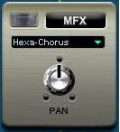
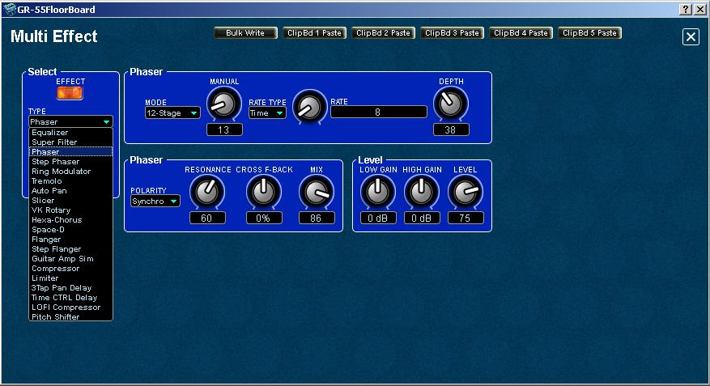

IndexMFX -
Multi Effect Editing
The
Multi Effects module can be enabled/disabled, a different effect
selected and panned from the main panel in the KATANA FloorBoard Editor
using its mini panel's ON/OFF switch, drop-down effects menu and PAN
knob. One of twenty effect types can be selected.

To
make detailed changes to the settings, click on the mini panel to open
the editor's Multi Effects edit panel, which looks like the following
image:

NOTE:
Each effect has its own unique set of parameters with a unique set of
knobs
and parameter fields to configure it with a different appearance.
Therefore, if you change from one to another effect TYPE, the
knobs and sub-panels will change to support the selected effect's parameters.
The number of possible combinations make it almost impossible to
explain every parameter's capabilities in the online help. See the
owner's manual for more detailed information.
The KATANA
effects parameters are equivalent to those of many Roland or other stomp
boxes, amps and rack mount effects. If you need to know how to adjust parameters for a given effect
TYPE, see the owners manual or try one of these websites to see how
your effects work or how your favorite players use their effects:
If
you want to sound like a player on one of these lists, try to setup
your KATANA effects similar to their rigs.